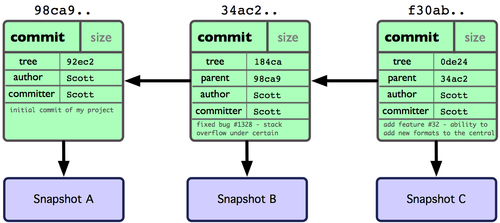

GIT
Simplificando la gestión del código
Por Fernando Jordán / @fjordansilva
¿Qué es GIT?
GIT es un sistema de control de versiones. Un sistema de control de versiones registra los cambios realizados sobre un archivo o conjunto de archivos a lo largo del tiempo, de modo que se puedan recuperar versiones específicas más adelante.
GIT es una evolución de los sistemas de control de versiones actuales. Es un sistema de control de versiones distribuido.
Sistemas de control de versiones
Sistemas locales
- Copiar archivos a otro directorio (marcando la fecha), es un enfoque simple y muy común pero también muy propenso a errores.
- Es fácil olvidar en qué directorio te encuentras, y guardar accidentalmente en el archivo equivocado o sobrescribir archivos que no querías.

Sistemas centralizados
- Se necesita colaboración entre desarrolladores.
- Se crean los sistemas de colaboración centralizados (Ej: CVS, SVN...): único servidor central y varios clientes que acceden y descargan/modifican la información.
- Desventajas: Punto de fallo único al ser un servidor central. Con cada rama/tag el código se duplica y aumenta el espacio en disco.

Sistemas distribuidos
- En un sistema distribuido, los clientes replican completamente el repositorio.
- Si un servidor falla, el servidor se puede restaurar con cualquier copia de los clientes.
- Cada rama/tag creado sólo hace una instantánea respecto al estado anterior.

Historia de GIT
GIT surge a partir de la necesidad de gestionar el código fuente del núcleo de Linux.
Durante muchos años Linux utilizó un sistema propietario denominado BitKeeper, pero Linus Torvalds decidó desarrollar un sistema propio enfocado en:
- Velocidad
- Diseño sencillo
- Fuerte apoyo al desarrollo no lineal (ramas paralelas)
- Completamente distribuido
- Capaz de manejar grandes proyectos de manera eficiente
Fundamentos de GIT
Entonces... ¿cómo trabaja GIT?
- Genera instantáneas, no diferencias.
- Casi todas las operaciones son locales.
- Tiene integridad.
- Sólo se añade información.
- Tres estados.
Genera instantáneas, no diferencias.
Cada vez que se confirma un cambio, GIT hace una foto del aspecto de los archivos en ese momento y guarda una referencia a esa instantánea. Los archivos no modificados no son almacenados de nuevo.

Casi todas las operaciones son locales.
La mayoría de las operaciones en Git sólo necesitan archivos y recursos locales para operar. Por ejemplo:
- Por ejemplo, para navegar por la historia del proyecto, Git no necesita salir al servidor para obtener la historia y mostrártela, simplemente la lee directamente de tu base de datos local
- También significa que hay muy poco que no puedas hacer si estás desconectado o sin VPN
Tiene integridad.
Todo en Git es verificado mediante el checksum antes de ser almacenado, y es identificado a partir de ese momento mediante dicha suma. Esto significa que es imposible cambiar los contenidos de cualquier archivo o directorio sin que Git lo sepa.
De hecho, de forma interna, GIT guarda todo no por el nombre del archivo, si no por el hash de dicho archivo.
Sólo se añade información.
Cuando realizas acciones en Git, casi todas ellas sólo añaden información a la base de datos de Git. Es muy difícil conseguir que el sistema haga algo que no se pueda deshacer, o que de algún modo borre información.
Esto hace que usar Git sea muy agradable, porque sabemos que podemos experimentar sin peligro de fastidiar gravemente las cosas.
Tres estados (I).
Git tiene tres estados principales en los que se pueden encontrar tus archivos: confirmado (committed), modificado (modified), y preparado (staged).
- Confirmado significa que los datos está almacenados de forma segura en la base de datos local.
- Modificado significa que has cambiado un archivo pero todavía no lo has confirmado a tu base de datos.
- Preparado significa que has marcado un archivo modificado en su versión actual para que vaya en la próxima confirmación.
Tres estados (II).
El flujo de trabajo sería:
- Modificas una serie de archivos en tu directorio de trabajo.
- Preparas los archivos, añadiendolos a tu área de preparación.
- Confirmas los cambios, lo que toma los archivos tal y como están en el área de preparación, y almacena esas instantáneas de manera permanente en tu directorio de Git.

Trabajar con GIT
Para empezar a trabajar con GIT necesitaremos las siguientes herramientas:
- Suite Putty (Windows)
- SourceTree (Windows / Mac) - Cliente
- GIT Command line tools
Autenticación
Para la generación de los certificados necesarios para la autenticación en servidores GIT utilizaremos:
- PuTTYgen (Windows)
- ssh-keygen (Mac / Linux)
La generación de certificados permite conectarse al servidor GIT utilizando una conexión SSH. Este tipo de conexión es la recomendada en términos de seguridad.
Las claves SSH permiten que dos ordenadores se identifiquen entre si, sin la necesidad de introducir contraseñas.
Cliente GIT
Como cliente GIT utilizaremos SourceTree desarrollado por Atlassian.
- Cliente con UI muy descriptiva que muestra todas las ramas/tags creadas y las interacciones entre ellas
- Permite navegar de forma visual por el histórico del proyecto
- Permite realizar comandos complejos con un simple clic del ratón
- Ampliamente extendido y compatible tanto con GIT como con Mercurial.

Servidor GIT
Podremos trabajar con cualquier servidor GIT. Algunos de los más populares son:
- GitHub - http://www.github.com
- BitBucket - https://bitbucket.org/
- Servidor GIT propio - GitLab
Creación de un repositorio
Tarea que se realiza al inicio del proyecto o durante la vida del proyecto si se subdivide en distintos módulos. Como ejemplo vamos a crear un proyecto en GitLab:
Creación de las claves SSH
La autenticación con GIT la podemos realizar de dos formas: claves SSH o mediante login/password.
La autenticación mediante claves SSH es preferible en términos de seguridad y comodidas para el usuario, ya que una vez generados los juegos de claves pública / privada e informado al servidor, el cliente SourceTree se encargará de todo lo relativo a la autenticación.
Creación de las claves SSH
La URL del repositorio nos indica el tipo de login a realizar:
git@git.connectis-ict.es:aireuropa_casillero_digital/mod-middleware.githttps://gitlab.connectis-ict.es/aireuropa_casillero_digital/mod-middleware.git
Creación de las claves SSH
Creación de las claves SSH en Windows:
Creación de las claves SSH
Como resultado de la creación de las claves SSH en Windows obtendremos 3 archivos:
ssh_key.pub- clave publicassh_key.ppk- clave privadassh_key.txt- Información de las claves para el servidor GIT
Creación de las claves SSH
Una vez creadas las claves SSH, debemos informar al servidor GIT de las mismas para que nos permita el acceso:
Operaciones básicas (I)
Obtener un repositorio: clonado
Es la primera operación a realizar sobre un repositorio. Para obtener una copia de un repositorio existente al que se desea contribuir el comando a utilizar es clone.
Clonar significa realizar una copia de todo el contenido del repositorio que se encuentra en el servidor GIT en nuestro PC.
A diferencia de otros sistemas (SVN), se obtiene una copia completa del repositorio del servidor, de forma que se podrá trabajar sin necesidad de conexión.
mkdir git-training
cd git-training
git clone git@git.connectis-ict.es:fjordan/git-training.git
Operaciones básicas (I)
Clonado con SourceTree
Se debe utilizar el botón de la barra de herramientas "Clone / New".
Operaciones básicas (II)
Estado de los archivos
Tu principal herramienta para determinar qué archivos están en qué estado es el comando git status. Si ejecutas este comando justo después de clonar un repositorio, deberías ver algo así:
cd git-training
git status
# On branch master
nothing to commit, working directory clean
Esto significa que tienes un directorio de trabajo limpio —en otras palabras, no tienes archivos bajo seguimiento y modificados—. GIT tampoco ve ningún archivo que no esté bajo seguimiento, o estaría listado ahí. Por último, el comando te dice en qué rama estás. Por ahora, esa rama siempre es "master", que es la predeterminada.
Operaciones básicas (II)
Estado de los archivos con SourceTree
TODO !!Operaciones básicas (III)
Seguimiento de archivos
Para empezar el seguimiento de un nuevo archivo se usa el comando
git add.
Iniciaremos el seguimiento del archivo README ejecutando esto:
touch README
cd git-training
git add README
Si vuelves a ejecutar el comando git status, verás que tu README está ahora bajo seguimiento y preparado:
git status
# On branch master
# Changes to be committed:
# (use "git reset HEAD <file>..." to unstage)
#
# new file: README
#
Operaciones básicas (III)
Seguimiento de archivos con SourceTree
TODO !!Operaciones básicas (IV)
Modificar archivos
Vamos a modificar un archivo que ya estuviese bajo seguimiento. Si, por ejemplo, modificamos el archivo MiArchivo.txt que ya está bajo seguimiento, y ejecutamos el comando git status de nuevo, veremos algo así:
git status
# On branch master
# Changes to be committed:
# (use "git reset HEAD <file>..." to unstage)
#
# new file: README
#
# Changes not staged for commit:
# (use "git add <file>..." to update what will be committed)
#
# modified: MiArchivo.txt
#
Operaciones básicas (IV)
Modificar archivos
El archivo MiArchivo.txt aparece bajo la cabecera "Modificados pero no actualizados" ("Changes not staged for commit") —esto significa que un archivo bajo seguimiento ha sido modificado en el directorio de trabajo, pero no ha sido preparado todavía—.
Para prepararlo, ejecuta el comando
git add
y volvemos a ejecutar git status:
$ git add MiArchivo.txt
$ git status
# On branch master
# Changes to be committed:
# (use "git reset HEAD <file>..." to unstage)
#
# new file: README
# modified: MiArchivo.txt
#
Operaciones básicas (IV)
Modificar archivos con SourceTree
TODO !!Operaciones básicas (V)
Ignorar archivos
A menudo tendrás un tipo de archivos que no quieras que GIT añada automáticamente o te muestre como no versionado. Suelen ser archivos generados automáticamente, como archivos de log, o archivos generados por tu compilador.
Para estos casos puedes crear un archivo llamado .gitignore, en el que listas los patrones de nombres que deseas que sean ignorados. por ejemplo:
$ cat .gitignore
*.sh
*.class
target/
Operaciones básicas (V)
Ignorar archivos: reglas
- las líneas en blanco o que comienzan por # son ignoradas.
- Se pueden usar patrones para indicar nombres de archivos o directorios.
- Se pueden ignorar directorios completos añadiendo / al final
- Se puede negar un patrón añadiendo una exclamación ! al principio.
# un comentario – esta línea es ignorada
# no permitir archivos con extensión .a
*.a
# autorizar el archivo lib.a, incluso aunque no se permitan los archivos .a
!lib.a
# ignorar el archivo TODO que está en el raíz, pero no otros (por ejemplo subdir/TODO)
/TODO
# ignorar todos los archivos en la carpeta build/
build/
# ignorar los archivos txt (ejemplo: doc/notes.txt) en el primer nivel de la carpeta, pero permitir doc/server/arch.txt
doc/*.txt
# ignorar todos los archivos .txt de la carpeta doc/
doc/**/*.txt
Operaciones básicas (V)
Ignorar archivos con SourceTree
TODO !!Operaciones básicas (VI)
Confirmar cambios
Ahora que el área de preparación está como tú quieres, podemos confirmar los cambios. Hay que recordar que cualquier cosa que esté sin preparar no se incluirá ne la confirmación de archivos.
La forma más fácil de confirmar es escribiendo
git commit -m <comentario>:
$ git commit -m "Story 182: Fix benchmarks for speed"
[master]: created 463dc4f: "Fix benchmarks for speed"
2 files changed, 3 insertions(+), 0 deletions(-)
create mode 100644 README
Operaciones básicas (VI)
Confirmar cambios con SourceTree
TODO !!Operaciones básicas (VII)
¿Qué es una rama en GIT?
En cada commit, GIT almacena un punto de control que conserva: un puntero a la copia puntual de los contenidos, metadatos del autor y el mensaje. Con cada commit, GIT realiza una fotografía del estado actual del repositorio.
Una rama Git es simplemente un puntero móvil apuntando a una de esas confirmaciones. La rama por defecto de Git es la rama master.
Operaciones básicas (VII)
Crear ramas
Con GIT podemos crear ramas fácilmente gracias al comando:
git branch <nombre>
$ git branch testing

IMPORTANTE! Este comando sólo crea una nueva rama, no nos sitúa en ella.
Operaciones básicas (VII)
Ramas con SourceTree
TODO !!Operaciones básicas (VIII)
Cambios entre ramas
Para pasar de una rama a otra, utilizaremos el comando
git checkout <rama>
$ git checkout testing

Operaciones básicas (VIII)
Commit sobre ramas
A partir de este momento, cualquier commit que se realice será sobre la rama activa, en nuestro caso "testing"
$ vim test.rb
$ git commit -a -m 'made a change'

Operaciones básicas (VIII)
Cambio de rama
¿Qué sucede si ahora queremos volver a la rama anterior "master"?
$ git checkout master

Operaciones básicas (VIII)
Commit sobre ramas
Si hacemos algún cambio sobre la rama actual... ¿donde se almacenará? ¿cómo quedará nuestro repositorio?
$ vim test.java
$ git commit -a -m 'hacemos algunos cambios'

Operaciones básicas (VIII)
Ramas con SourceTree
TODO !!Operaciones básicas (IX)
Listar etiquetas
Con GIT se pueden crear etiquetas (marcas) en puntos específicos de la historia del repositorio. Para ello utilizaremos el comando git tag. Por ejemplo, para listar las etiquetas del repositorio actual:
$ git tag
v0.1
v1.3
O podemos buscar una etiqueta utilizando un patrón de búsqueda: git tag -l <:patrón>
$ git tag -l 'v1.4.2.*'
v1.4.2.1
v1.4.2.2
v1.4.2.3
v1.4.2.4
Operaciones básicas (IX)
Crear etiquetas
Con GIT podemos crear etiquetas en nuestra rama de trabajo gracias al comando:
git tag -a <nombre> -m <mensaje>
$ git tag -a v1.4 -m 'my version 1.4'
$ git tag
v0.1
v1.3
v1.4
Este tipo de etiquetas se denominan
Operaciones básicas (IX)
Etiquetas con SourceTree
TODO !!Operaciones básicas (XI)
Publicar cambios
Cuando se quiere compartir una rama o un conjunto de cambios con el resto del mundo, se debe enviar a un servidor remoto (push).
Los cambios realizados sobre las ramas locales NO se sincronizan automáticamente con los remotos, hay que enviarlo (push) expresamente.
Por ejemplo, supongamos que tenemos cambios que queremos publicar en una rama llamada "testing":
git push <remoto> <rama>
$ git push origin testing
Counting objects: 20, done.
Compressing objects: 100% (14/14), done.
Writing objects: 100% (15/15), 1.74 KiB, done.
Total 15 (delta 5), reused 0 (delta 0)
To git@gitlab.com:fjordan/git-training.git
* [new branch] testing -> testing
Operaciones básicas (XI)
Publicar con SourceTree
TODO !!Operaciones básicas (XI)
Recuperar cambios
Activando (checkout) una rama local a partir de una rama remota, se crea automáticamente lo que podríamos denominar "una rama de seguimiento" (tracking branch). Las ramas de seguimiento son ramas locales que tienen una relación directa con alguna rama remota.
Cuando queremos actualizar los contenidos de nuestro local con los contenidos del remoto, debemos utilizar el comando:
git pull
$ git pull
remote: Counting objects: 20, done.
remote: Compressing objects: 100% (14/14), done.
remote: Total 15 (delta 5), reused 0 (delta 0)
Unpacking objects: 100% (15/15), done.
From git@gitlab.com:fjordan/git-training
* [new branch] serverfix -> origin/serverfix
Operaciones básicas (XI)
Recuperar cambios con SourceTree
TODO !!Secuencia de trabajo
En el día a día, para realizar las tareas más comunes utilizaremos esta secuencia de comados sobre la rama de trabajo en curso:
Añadir cambios al repositorio:
$ git add .
$ git commit -m <mensaje>
$ git push origin <rama>
Obtener cambios del repositorio:
$ git pull
Secuencia de trabajo con SourceTree
TODO !!Git Flow
El elemento principal de trabajo con GIT son las ramas. En ellas vamos a ir almacenando todos los elementos de nuestro proyecto: Releases, Fixes, nuevas Features, experimentos, etc. Necesitamos una forma de organizar el trabajo ordenada y que nos permite poder tener una trazabilidad y seguimiento del proyecto.
Git Flow es una extensión de GIT que facilita la gestión de ramas y flujos de trabajo.
Git Flow
Elementos básicos en Git Flow:
- Rama master: Cualquier commit que se realice sobre esta rama debe estar preparado para subir a producción.
- Rama develop: En esta rama estará el código que formará parte de la siguiente versión del software.
-
Ramas auxiliares:
- Feature: Rama de trabajo, suponen nuevas características que en algún momento serán añadidas a la rama develop.
- Release: Ramas asociada a una release del proyecto. Irá asociada a los tags de versión y en ella se integrarán los parches urgentes de producción.
- Hotfix: Solución a fallos de producción.
Git Flow en SourceTree
Para activar Git Flow en el proyecto, pulsamos su botón en la barra de herramientas:
La primera vez que lo utilicemos, nos preguntará los nombres de las ramas/etiquetas a utilizar. Dejamos los valores por defecto:
Git Flow en SourceTree
Una vez configurado Git Flow, para cualquier rama o etiqueta nueva que necesitemos, al pulsar el botón nos preguntará:
Git Flow en SourceTree
Una vez finalizada la rama en la que estamos trabajando, al pulsar el botón nos preguntará:
Metodología de trabajo (I)
La metodología de trabajo propuesta irá asociada al uso en el proyecto de Git Flow.
Se utilizarán todos los tipos de ramas disponibles en Git Flow más un conjunto personalizado de etiquetas:
- Rama master: Asociada al contenido actual en producción.
- Rama develop: Asociada a la siguiente versión del software.
-
Ramas auxiliares:
- Feature: Rama de trabajo actual del proyecto.
- Release: Ramas asociada a una release del proyecto.
- Hotfix: Solución a fallos de producción.
Metodología de trabajo (II)
Un proyecto típico tendrá esta apariencia:
Metodología de trabajo (III)
Ramas
Las ramas de tipo feature tendrán las siguientes características:
- Se deben originar desde la rama develop
- Una vez finalizadas, su código se incorporará a la rama develop
- Su nombre irá asociado al sistema de gestión de proyectos. Por ejemplo, una tarea en Redmine con enlace
https://<dirección del servidor>/issues/5531
nos producirá una rama con nombre
feature/5531
Metodología de trabajo (IV)
Ramas
Las ramas de tipo release tendrán las siguientes características:
- Se deben originar desde la rama develop
- Una vez finalizadas, su código se incorporará a la rama develop
- Su nombre irá asociado a la versión del software que se publica.
- Se debe utlizar notación semántica de tres dígitos X.Y.Z junto al nombre de la rama. El último dígito se deja sin definir ya que en esta rama se incorporarán los fixes necesarios para que el código se pueda pasar a producción con garantías.
Ejemplo: release/1.2.x
Metodología de trabajo (V)
Ramas
Las ramas de tipo hotfix tendrán las siguientes características:
- Se deben originar desde la rama master
- Una vez finalizadas, su código se incorporará a la rama master (si han sido 100% verificados los cambios) o a la rama develop (si hay que realizar pruebas antes del paso a producción)
- Su nombre irá asociado al sistema de gestión de proyecto: Por ejemplo, una tarea en Redmine con enlace
https://<dirección del servidor>/issues/5531
producirá una rama con nombre
hotfix/5531
Metodología de trabajo (VI)
Etiquetas
Durante el ciclo de vida del proyecto, se establecerán las siguientes etiquetas para una versión X.Y.Z del proyecto:

Metodología de trabajo (VII)
Etiquetas
- X.Y.Z/KO - Kick Off de la versión del proyecto. Supone el punto de partida de una nueva versión del software.
- X.Y.Z/CC - Code Complete de la versión del proyecto. Supone la finalización de las tareas de programación y es previo a las pruebas del software. A partir de este punto los commits que se realicen serán solución a bugs y no incluirán nuevas features.
- X.Y.Z/RFFI - Ready For Final Integration. Supone la finalización de las pruebas internas del software y el inicio de las pruebas del cliente (si las realiza). A partir de este punto los commits que se realicen serán solución a bugs detectados por el cliente y no incluirán nuevas features.
- X.Y.Z/RA - Release Acceptance. Esta etiqueta indica que el software ha sido aceptado por el cliente y no se realizará más desarrollo sobre esta versión.

FIN
Por Fernando Jordán / @fjordansilva